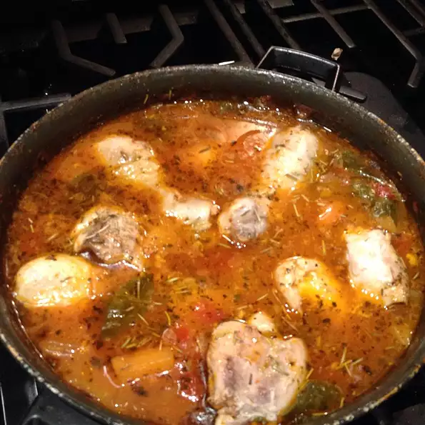

Chicken Vegetable Stew

Description
This is a really versatile recipe. I vary it depending on what I have in the fridge. I think the most important ingredients are the onion, garlic, and mushroom. You could probably even do a vegetarian version. This is also a good recipe for people with allergies.
Ingredients
- 2 tablespoons olive oil
- 1 onion, diced
- 2 stalks celery, diced
- 2 carrots, diced
- 2 cloves garlic, pressed
- 1 cup cremini mushrooms, sliced
- 1 tablespoon tomato paste
- 1 ⅓ cups water
- ½ teaspoon dried marjoram
- ½ teaspoon dried rosemary
- ½ teaspoon paprika
- ¼ teaspoon dried sage
- 1 bay leaf
- 1 pinch cayenne pepper
- salt and ground black pepper to taste
- ½ pound skinless, boneless chicken breast halves, cut into bite-size pieces, or more to taste
- ½ pound skinless, boneless chicken breast halves, cut into bite-size pieces, or more to taste
- 1 teaspoon cold water, or as needed
Steps
- Heat olive oil in a stockpot over medium-low heat. Cook and stir onion, celery, carrots, and garlic in the hot oil until onion is translucent, about 10 minutes. Add mushrooms to onion mixture and cook, stirring occasionally, until mushrooms are slightly tender, about 5 minutes.
- Stir tomato paste and about 1 tablespoon water together in a bowl until tomato paste is thinned; add remaining water, marjoram, rosemary, paprika, sage, bay leaf, cayenne pepper, and pepper and stir.
- Stir tomato paste mixture into onion mixture; add chicken. Bring mixture to a boil; reduce heat to medium-low, cover stockpot, and simmer until chicken is no longer pink in the center and vegetables are tender, about 40 minutes.
- Stir cornstarch and cold water together in a bowl until smooth. Stir cornstarch mixture and salt into stew; bring to a boil and cook until stew is thickened, 5 to 10 minutes.